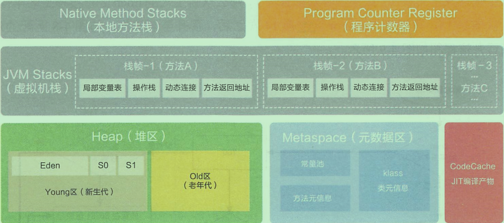
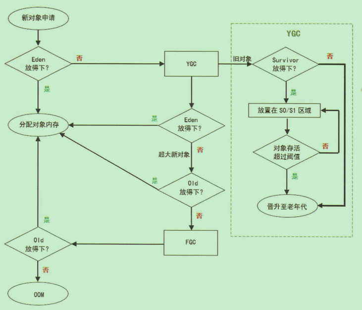
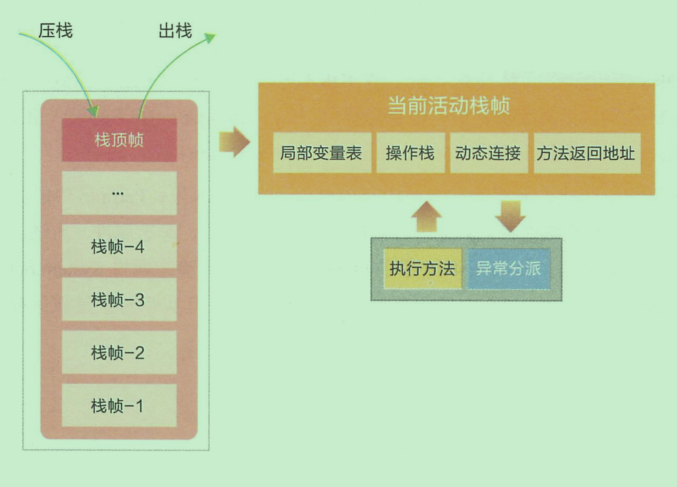
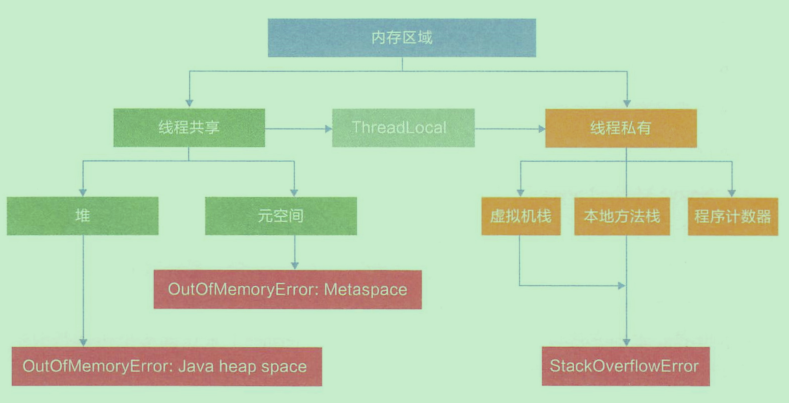
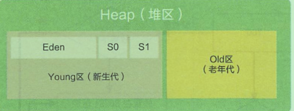
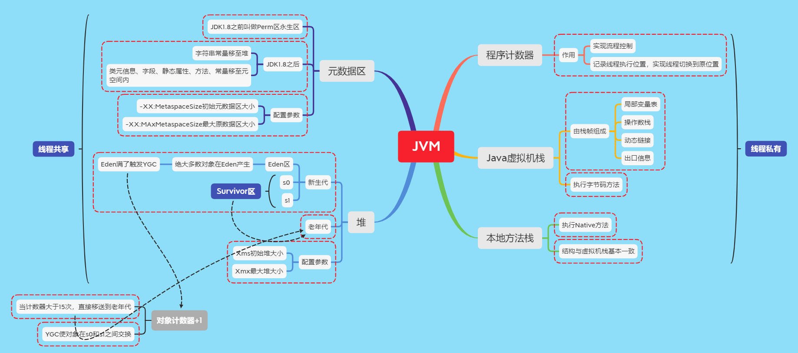

JVM-1-Jvm内存布局
内存是非常重要的系统资源，是硬盘和CPU的中间仓库以及桥梁，承载着操作系统和应用程序的实时运行。JVM内存布局规定了Java在运行过程中内存申请、分配、管理策略，保证JVM的高效稳定运行。不同的JVM对内存的划分方式和管理机制存在部分差异。JVM的内存布局如下图所示：

1、Heap(堆区)
Heap是OOM故障最主要的发源地，它存储着几乎所有的实例对象，堆由垃圾收集器自动回收，堆区由各子线程共享使用。通常情况下，它占用的空间是所有内存区域中最大的，但如果无节制地创建大量对象，它容易消耗完所有的空间。堆的内存空间即可以固定大小，也可以在运行时动态调整，通过如下参数设定初始值和最大值，比如-Xms256 -Xmx1024M，其中-X表示它是JVM运行参数，ms是memory start的简称，mx是 memory max的简称，分别代表最小堆容量和最大堆容量。但是在通常情况下，服务器在运行过程中，堆空间不断扩容与回缩，势必形成不必要的系统压力，所以在线上生产环境中，JVM的Xms和Xmx设置成一样大小，避免在GC后调整堆大小时带来的额外压力。
堆分为两大块：新生代和和老年代。对象产生之初在新生代，步入暮年时进入老年代，但是老年代也接纳在新生代无法容纳的超大对象。新生代=1个Eden区+2个Survivor区。绝大部分对象在Eden区生成，当Eden区装满的时候，会触发Young Garbage Collection，即YGC。垃圾回收的时候，在Eden区实现清楚策略，没有被引用的对象则直接回收。依然存活的对象会被移送到Survivor区，这个区真是名副其实的存在。Survivor区分为S0和S1两块内存空间，送到哪块空间呢？每次YGC的时候，它们将存活的对象复制到未使用的那块空间，然后将当前正在使用的空间完全清除，交换两块空间的使用状态。如果YGC要移送的对象大于Survivor区容量的上限，则直接交给老年代。假如一些没有进取心的对象以为可以一直在新生代的Survivor区交换来交换去，那就错了。每个对象都有一个计数器，每次YGC都会加1。 -XX:MaxTenuringThreshold参数能配置计数器的值到达某个阈值的时候，对象从新生代晋升至老年代。如果该参数配置为1，那么从新生代的Eden区直接移至老年代。默认值是15，可以在Survivor区交换14次之后，晋升至老年代。

如果Survivor区无法放下，或者超大对象的阈值超过上限，则尝试在老年区中进行分配；如果老年代也无法放下，则会触发FGC(Full Garbage Collection)，如果依然无法放下，则抛出OOM。堆内存出现OOM的概率是所有内存耗尽异常中最高的。出错时的堆内存信息对解决问题非常有帮助，所以给JVM设置设置运行参数-XX:HeapDumpOnOutOfMemoryError，让JVM遇到OOM异常时能输出堆内信息，特别是对相隔数月才出现的OOM异常尤为重要。
2、Metaspace(元空间)
以Hotspot为例，在JDK8以前元空间的前身是Perm区(永生区)，永生区在启动时固定大小，很难进行调优，并且FGC时会移动类元信息。在某些场景下，如果动态加载类过多，在运行过程中，要不断动态加载很多类，经常出现致命错误Exception in thread ‘xxx.xxx.xxx’ java.lang.OutOfMemoryError: PermGenspace，为了解决这个问题，需要设定运行参数–XX:MaxPermSize=1280m，如果部署到新机器上，往往会因为JVM参数没有修改导致故障再现。除此之外，永生区在垃圾回收过程中还存在诸多问题。所以在JDK8及以后的版本中使用元空间替换永生区。
在JDK8里，Perm区中的所有内容中字符串常量移至堆内存，其他内容包括类元信息、字段、静态属性、方法、常量等都移至元空间内，
3、JVM Stack(虚拟机栈)
相对于基于寄存器的运行环境，JVM是基于栈结构的运行环境。栈结构移植性更好，可控性更强。JVM中的虚拟机栈是描述Java方法执行的内存区域，它是线程私有。栈中的元素用于支持虚拟机进行方法调用，每个方法从开始调用到执行完成的过程就是栈帧从入栈到出栈的过程。在活动线程中，只有位于栈顶的帧才是有效的，称为当前栈帧。正在执行的方法称为当前方法，栈帧是方法运行的基本结构。在执行引擎运行时，所有指令都只能针对当前栈帧进行操作。而StackOverflowError表示请求的栈溢出，导致内存耗尽，通常出现在递归方法中。操作栈的压栈和出栈

虚拟机栈通过压栈和出栈的方法，对每个方法对应的活动栈帧进行运算处理，方法正常执行结束，肯定会跳到另一个栈帧上面。在执行过程中，如果出现异常，会进行异常回溯，返回地址通过异常处理表确定。栈帧在整个JVM体系中的地位颇高，包括局部变量表、操作栈、动态链接、方法返回地址等。
局部变量表
局部变量表存放了编译器可知的各种Java虚拟机基本数据类型、对象引用和returnAddress类型(指向了一条字节码指令的地址)。
相对于类似属性变量的准备阶段和初始化阶段，局部变量没有准备阶段，必须显示初始化。如果是非静态方法，则在index[0]位置上存储的是方法所属对象的实例引用，随后存储的是参数和局部变量。字节码指令中的STORE指令就是将操作栈中计算完成的局部变量写回局部变量表的存储空间内。
操作栈
操作栈是一个初始状态为空的桶式结构栈。在方法执行过程中，会有各种各样指令往栈中写入和提取信息。JVM的执行引擎是基于栈的执行引擎，其中的栈指的就是操作栈。字节码指令集的定义都是基于栈类型的，栈的深度在方法元信息的stacks属性中。
动态连接
每个栈帧中包含一个在常量池中对当前方法的引用，用的是支持方法调用过程的动态连接。
方法返回地址
方法执行时有两种退出情况：
正常退出
执行到任何方法的返回字节码指令，如RETURN、IRETURN、ARETURN等
异常退出
无论哪种退出情况，都将返回至方法当前被调用的位置。方法退出的过程相当于弹出当前栈帧，退出可能有三种方法：
返回值压入上层调用栈帧。
异常信息抛给能够处理的栈帧。
PC计数器指向方法调用后的下一条指令。
对于虚拟机栈规定了两类异常状况：如果线程请求的栈深度大于虚拟机所允许的深度，将抛出StackOverflowError异常；如果Java虚拟机栈容量可以动态扩展，当栈扩展无法申请到足够的内存会抛出OutIfMemory异常。
4、Native Method Stacks(本地方法栈)
本地方法栈也是线程对象私有的，虚拟机栈“主内”，而本地方法栈“主外”。这个“内外”是针对JVM来说的，本地方法栈为Native方法服务。线程开始调用本地方法时，会进入一个不再受JVM约束的世界。本地方法可以通过JNI(Java Native Interface)来访问虚拟机运行时的数据区，甚至可以调用寄存器，具有和JVM相同的能力和权限。当大量本地方法出现时，势必会削弱JVM对系统的控制力，因为它的出错信息都比较黑盒。对于内存不足的情况，本地方法栈还是会抛出native heap OutOfMemory。
5、Program Counter Register(程序计数寄存器)
在程序计数器中，Register的命名源于CPU的寄存器，CPU只有把数据装载到寄存器中才能够运行。寄存器存储指令相关的现场信息，由于CPU时间片轮限制，众多线程在并发执行过程中，任何一个确定的时刻，一个处理器或者多核处理器中的一个内核，只会执行某个线程中的一条指令。这样必然导致经常中断或者恢复，如何保证分毫不差呢？每个线程在创建后，都会产生自己的程序计数器和栈帧，程序计数器用来存放执行指令的偏移量和行号指示器等，线程执行或恢复都要依赖程序计数器。程序计数器在各个线程之间互不影响，此区域也不会发生内存溢出异常。
Java线程和内存的关系如下

堆内存中对象的基本分配策略
堆分为新生代和老年代两个部分，上面已经说了
新生代又由1个eden+1个survivor区组成，survivor又由s0和s1两个部分，如下图所示

大部分情况下，对象都在Eden区域分配，在一次YGC(新生代垃圾回收)后，如果对象还存活，则会进入S0或者S1，同时对象年龄(对象计数器)也会加1(Eden —>survivor区后对象年龄变为1)，当对象的年龄增加到一定程度(默认年龄15)，就会被直接移动到老年代。这个默认年龄可以通过-XX:maxTenuringThreshold来设置。
大对象和长期存活的对象也会直接进入老年代。
